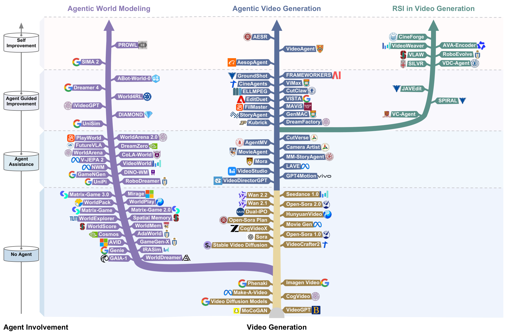
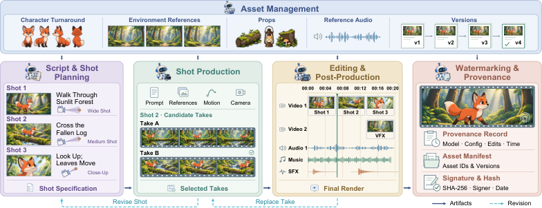
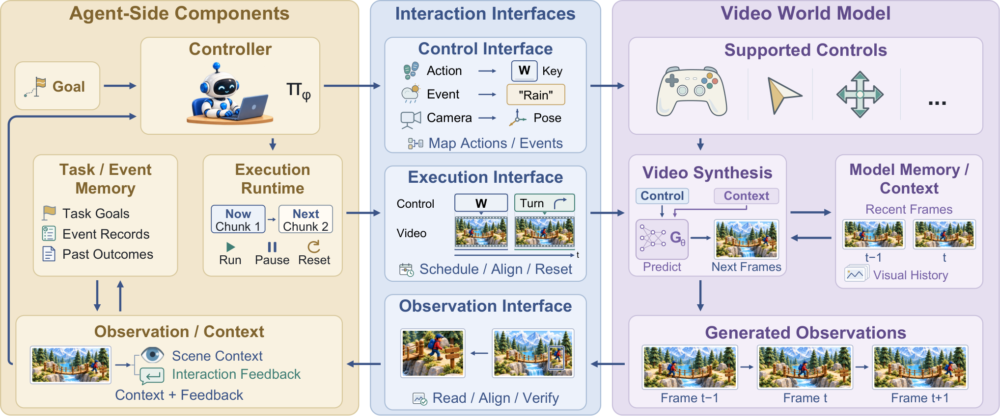
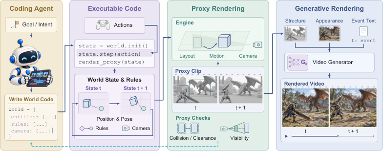
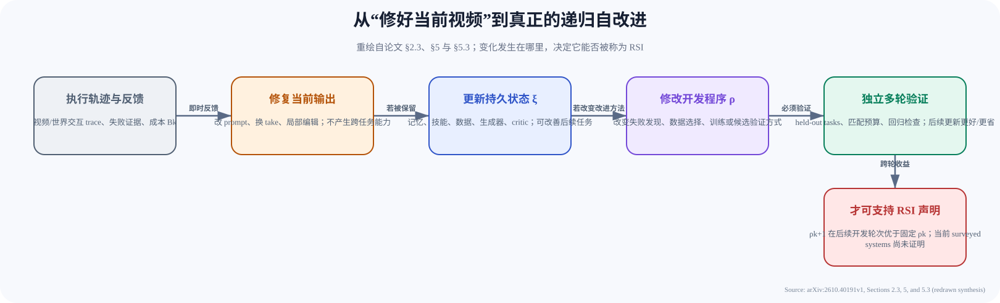
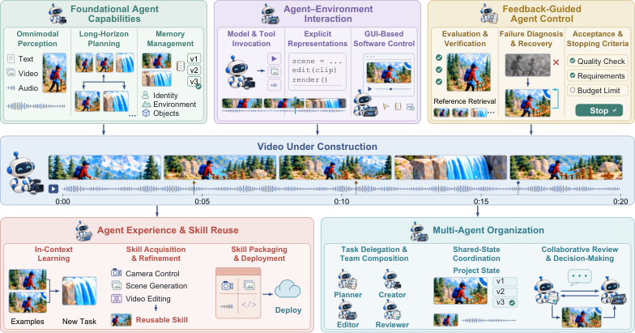

核心结论
方法脉络
关键证据
1. 论文定位：它提供一张地图，不提供一辆新车
读这篇文章时最容易犯的错误，是把大量系统名、框架图和 RSI 标题误读成作者提出并验证了一个新 Agent 系统。
论文的体裁是 survey/position report。它把原本分散在多镜头视频生产、工具型 Agent、交互世界模型、生成式渲染、视频评价、数据闭环和自进化 Agent 中的工作，用 Agent Harness 作为共同分析单位组织起来。官方 GitHub README 明确称其为 living collection，当前列出 387 个去重后的论文与资源。
真正的新意主要有三项：一套 Agent/Harness/模型/工具的角色边界；一个从生产、交互到开发的统一执行视角；一套不把 test-time refinement、记忆积累和模型更新冒充 RSI 的严格证据门槛。它没有训练新参数，也没有运行一个覆盖三条路径的端到端系统。
Figure 2 把代表性工作投影到三棵树和四档 Agent involvement 上。这里的纵向位置是作者的概念分类，不是由统一 benchmark 测出的能力排名；三棵树也是并列研究方向，不是必然依次升级的路线。
一句话判断

2. 核心贡献：Agent 与 Harness 必须分开
Agent 是目标驱动的决策过程；Harness 是让这些决策真的运行、受约束并持久化的执行层。
论文把 Agent 写成 Aφ=(O,πφ,M,T,F)：观察、决策策略、记忆、工具行动和反馈。它强调使用 LLM/VLM 只是实现选择，不是 Agent 的定义；训练模型学会 reasoning/tool use，也不自动获得一个可靠执行过程。
Harness 写成 H=(O,C,T,X,M,F,R)。相比 Agent 功能视角，它显式加入 C 上下文构造、X 动作执行和 R 准入/终止规则。Harness 不只是 prompts 或 tool list；它决定 controller 看哪些帧、如何执行编辑、提交哪个 artifact version、异步结果如何回到原请求、预算和权限何时禁止下一步。
运行状态 st=(qt,mt,bt,et) 分别保存任务/计划/制品版本、证据与经验、剩余预算、工具/运行时记录。每轮由 Harness 观察并构造 ct，controller 从当前允许动作集 At 选择 at，执行产生 yt，反馈 ft 被路由后再原子性地更新 st+1。
这个区分解决了常见归因错误：结果变好可能来自更强的生成器 Gθ、更强 controller πφ、更好的 Harness、更多预算或更多 sampling。若不固定这些变量，就不能把收益归因于 Agent 编排或 Harness evolution。
| 对象 | 主要职责 | 会改变什么 | 不应混淆为 |
|---|---|---|---|
| Video generator Gθ | 生成视频或预测未来观察 | 像素/latent 与模型参数 | Agent 或完整 workflow |
| Controller πφ | 根据目标、上下文和允许动作做决策 | 下一步行动 | 工具执行与持久状态提交 |
| Agent Harness H | 上下文、工具、执行、状态、反馈、权限、预算、停止 | 可运行的系统过程 | 一组 prompts 或 tool list |
| Critic / verifier | 产生诊断或检查证据 | 反馈 ft | 编辑器或行动策略 |
| External evaluator | 向研究者/审计者报告证据 | 测量结果 | 控制当前 run 的内部 critic |
| Reward model | 给分或偏好信号 | 排序/搜索/离线学习依据 | 自动知道下一步该改什么 |
3. 第一条路径：Agentic Video Generation 是完整生产，而不只是多次调用 T2V
Harness 的对象是项目状态：剧本、shot specification、资产、候选 takes、剪辑时间线和 provenance，而不是孤立 prompt。
作者按 workflow function 而不是模型结构组织文献：Script/Shot Planning 决定拍什么；Asset Management 维护角色、场景、参考音频和版本；Shot Production 通过生成模型、代码动画或 3D/模拟产生素材；Editing/Post-production 操作时间线或局部像素；最后把 watermark 和 provenance 绑定到交付版本。
这里最重要的系统观点是依赖传播。换一个角色参考可能影响多个镜头；替换 take 会改变剪辑；重排时间线可能要求音频重做。Harness 因此需要显式 artifact graph、版本、时间范围和依赖，而不是把所有历史压成一段自然语言。
论文还区分 model-context consistency 与 harness-record consistency：多镜头生成器把一致性放在模型 context 内，操作简单但受 context 范围限制；Harness 把身份、状态和引用做成可检查/可更正记录，能局部重做，但必须保证每次传给生成器的是正确版本。
| 层级 | 要测什么 | 常见伪提升 |
|---|---|---|
| 单 shot | 视觉质量、动作、构图、条件遵循 | 多采样挑最好但不报告尝试数 |
| 跨 shot | 身份、场景、事件状态、转场、音画同步 | 只报告孤立 clips |
| 项目完成 | 原始 brief 是否完成、是否可交付 | 改写剧本后按新目标给自己打分 |
| 系统效率 | generator/critic/controller calls、墙钟、金额、失败重试 | 只报告最终成功调用 |
| 可恢复性 | 版本、依赖、异步 job、局部修复与 provenance | 全量重生成掩盖诊断能力 |

4. 第二条路径：World Model 是功能角色，不是模型名称
论文给了一个非常有用的否定标准：长、真实、流式的视频不自动等于交互世界模型。
作者把 world model 定义为视觉环境动力学的功能角色：给定历史观察、支持的动作/控制和其他条件，预测未来视觉观察；返回的观察必须能支持下一轮决策，动作后果也要在后续步骤中持续存在。它可以是 diffusion、flow、autoregressive 或混合模型，也不要求显式 3D state。
Streaming 只是执行模式：边生成边暴露 frame/chunk。只有当新控制能在明确 interval 生效、返回观察可被下一轮读取、时延和状态连续性满足交互，才能称为 interactive；否则只是流式播放。
Harness 在 world model 外增加三个接口：control interface 将高层意图映射为 action/event/camera control；execution interface 调度、对齐、暂停/重置 chunk；observation interface 读取、时间对齐并验证返回帧。外部 memory/tracking 与模型内部 context/state 必须分开报告。
作者建议从三个维度评价：long-horizon coherence（过去动作的后果是否保持）、intervention sensitivity（改变动作是否带来方向正确的变化）、constraint consistency（碰撞、支撑、规则等约束是否满足）。漂亮画面只覆盖其中很小一部分。
很值得保留的定义

5. 最有工程启发的分支：显式 World State + 生成式渲染
把世界状态和规则交给程序/引擎，把视频模型降级为 renderer，可以让 Agent 直接读取、修改和验证状态。
在普通 action-conditioned world model 中，动力学和视觉常被同一神经模型隐式承担；Harness 只能通过 frame 推断状态。显式状态路线让代码/引擎执行规则、保存物体位置和相机，视频模型只把 sparse layout、low-poly、depth/normal 或 G-buffer 变成高保真像素。物体离开视野后仍由程序存在，不依赖生成模型 context。
这条路线的优势是可检查、可编辑、可单测：碰撞、clearance、visibility、边界和脚本错误可以在昂贵的视频生成前发现；每一帧也有结构参考可测 adherence。代价是世界只能表达程序写出的对象与规则，新结构通常需要新 renderer 或 control adapter。
显式状态没有解决 appearance permanence。材质、光照、布料、流体等未被 proxy 指定的内容仍由生成器补全，重访时可能漂移；结构输入也可能被 renderer 忽略。因此必须同时验证程序状态与最终视频，而不能因为 code 正确就认为视觉世界正确。
论文列举一些工作报告的运行速度，但特意区分 frame rate 与 responsiveness：高 FPS 不代表按键后低延迟，也不代表交互后果正确。该原则与视频流/实时推理评估同样适用。
| 维度 | 隐式视频 World Model | 显式程序/引擎 + Renderer |
|---|---|---|
| 状态 | frames/latent/context 中隐式存在 | 对象、规则、相机、事件显式保存 |
| 动作 | 作为模型 condition | 先确定性更新程序状态 |
| 观察 | 模型直接预测未来像素 | 引擎先产 proxy，再由视频模型渲染 |
| 可验证性 | 通常只能从视频估计 | 可同时查程序状态、proxy 与最终像素 |
| 主要风险 | 遗忘、动力学错误、不可诊断 | 表达受限、renderer 偏离结构、外观漂移 |

6. 第三条路径：论文最关键的判断是“现阶段还没有完整 RSI”
作者没有把 iterative refinement 包装成 recursive self-improvement，而是把变化对象与验证时间尺度逐层拆开。
论文用 ξk 表示持久开发状态，包括数据、模型、critic 和可复用 Harness 状态；用 ρk 表示测试、数据选择和更新程序。发展一轮可写成 (ξk+1,ρk+1)=U(ξk,ρk;Lk,Fk,Bk)，其中 Lk 是执行 traces，Fk 是开发反馈，Bk 是预算。
若 ρk 固定，只是重复执行同一套数据收集、训练和验证流程，即使 generator 越来越好，也只是 iterative improvement。只有反馈导致 ρ 本身改变——例如换了发现失败的方法、选数据的方法、训练实验策略或候选接受规则——且这种改变让后续开发轮次在独立任务上更好或更省，才支持 RSI。
作者概括了反馈重新进入开发的四个通道：failure diagnosis、data curation、training 和 validation。现有工作覆盖其中一些：保存 pipeline fix、积累生产 skill、更新 generator/reward model、用 Agent 构造数据；但没有一个 surveyed video system 证明修改后的 development procedure 能持续提升后续 generator-development rounds。
这也是标题中 Recursive Self-Improvement 最容易被误读的地方：论文讨论的是 toward RSI 的机制与评价条件，不是宣布视频生成已经实现 RSI。
作者最审慎也最重要的原话结论
| 变化对象 | 例子 | 能证明什么 | 还缺什么 |
|---|---|---|---|
| 当前 artifact | 改 prompt、换 take、局部编辑 | 本次视频可能更好 | 跨任务保留 |
| Harness state ξ | 记忆、playbook、skill、controller 权重 | 后续生产能力可能提升 | 独立 held-out 与回归 |
| Generator / critic state ξ | 新数据、SFT/RL、reward model | 模型版本改善 | 固定 procedure baseline 与 reward 过拟合检查 |
| Development procedure ρ | 改变诊断、选数、训练或验收规则 | 可能是 RSI 的必要条件 | 跨多轮、匹配预算、独立任务证明后续更新更有效 |

7. 一个可用的视频 Agent 需要哪五组能力
论文把 Agent 设计从“LLM + tools”展开为感知/规划/记忆、环境交互、反馈控制、经验复用和多 Agent 协作。
基础能力包括 omnimodal perception、long-horizon planning 和 memory management。视频的难点不是输入更长，而是证据有时间范围、身份会变化、音画可能错位、过去事实可能被后续生成覆盖；因此 memory entry 应记录 provenance、版本、有效范围和可靠性，而不是只保存 summary。
环境交互包括模型/工具调用、代码与程序执行、GUI 控制。精确时间、几何和物理结构适合用代码或 scene program；视觉细节可交给生成模型。GUI 覆盖广但容易操作错轨道/区间，必须从观察到的界面状态恢复，不能假设 click 成功。
反馈控制必须把证据绑定到可操作的 correction unit，并设置 acceptance/stopping/budget。Skill reuse 要证明在新任务和工具升级后仍有效；multi-agent 要在匹配工具和预算下优于单 controller，不能用更多角色数代替有效协作。

8. 证据审计：这篇 survey 能支持什么，不能支持什么
论文的论证强项是定义、边界和跨文献综合；弱项是没有统一实证来检验这套 taxonomy 的预测力。
论文没有 Experiments 章节、统一 benchmark、消融、用户研究或端到端原型。正文中的速度和质量数字来自被调研工作，不能当作本 survey 框架的验证。Figure 3/4/5/8 的 captions 也明确说明是 illustrative/conceptual，而不是实验结果。
官方 README 把集合称为 387 个 unique papers and resources，类别里同时包含论文、技术报告、GitHub repository、产品/在线文档和通用 Agent 基础。这适合做领域导航，但不能把 387 理解成 387 篇同质、同行评议、按统一标准筛选的实验论文。
未看到类似 systematic review 的检索数据库、关键词、时间范围、纳入/排除流程或双人复核统计。GitHub 支持 issue/PR 持续补充，说明它是 living catalogue；优点是更新快，缺点是复现某一版文献覆盖需要锁定 commit。
| 证据类型 | 论文提供 | 可以支持 | 不能支持 |
|---|---|---|---|
| 形式化定义 | Agent/Harness loop、state、RSI ξ/ρ | 概念边界与评价协议 | 某种实现一定更强 |
| 文献 taxonomy | 387 项 living collection；大量代表性系统 | 领域覆盖与设计空间 | 工作间的统一性能排序 |
| 论文原生图 | 生产、世界交互、显式 state、Agent design | 职责与接口关系 | 图中案例的实际效果 |
| 被引用论文结果 | 若干 FPS、benchmark 与个案结论 | 说明已出现哪些能力 | 在统一硬件/数据/预算上的横向比较 |
| 作者原创实验 | 无 | N/A | Harness 因果增益、RSI、多轮回归、系统成本结论 |
9. 官方项目与代码状态
没有可运行模型/Harness 不是“代码没放全”，而是因为这项工作的交付物本来就是论文、分类数据与浏览网站。
核查官方仓库 HEAD d696868f8b3c25c89740159114bff5cec2a4270a：主体包含 data/catalogue.json、分类与人物数据、README、引用文件、网页 assets，以及构建/检查站点和链接的 Node scripts。未发现生成模型权重、训练脚本、推理 pipeline 或一套统一 Agent runtime。
因此复现这篇 survey 的合理目标是：复核 taxonomy、资源链接、类别映射和网页构建，而不是运行 Figure 4 所画的 world-model harness。若要落地，需要从被引用的具体系统——例如 VideoGen-Agent、VISTA、Code World Model、WorldMem、VideoWeaver 或 RRSI——分别取代码和模型。
| 内容 | 用途 | 是否是方法实现 |
|---|---|---|
| README + catalogue JSON | living bibliography 与 reading paths | 否 |
| docs 网站 | 搜索、浏览、Figure 2 预览 | 否 |
| build/audit scripts | 生成网页、检查链接和元数据 | 否 |
| survey references / comparison data | 论文与比较表的数据源 | 否 |
| model weights / inference / training | 未提供 | N/A |
10. 与此前 ATAS 的关系
ATAS 是一个可运行的具体 world-state 系统；本论文是更高层的 Harness taxonomy，二者不要混为一篇。
此前分析的 ATAS 把显式点云 scene memory、event memory、三道 state-admission gate 和可恢复执行日志落成代码并报告实验；它对应这篇 survey 所强调的外部 state、project/runtime records、feedback routing 和 provenance 思路。
但本 survey 的 v1 正文与当前 companion catalogue 中没有检索到 ATAS/Any Time, Any Space 条目，因此不能说作者用 ATAS 验证了框架。更准确的说法是：ATAS 可以被外部读者映射到这套 Harness 分析坐标中，而不是论文直接讨论的案例。
两者的证据等级也不同：ATAS 可以审计具体 code path、指标和 failure mode；本 survey 只能告诉我们应检查哪些状态、接口、预算与验证边界。
| 维度 | 本 survey | ATAS | 端到端视频生成模型 |
|---|---|---|---|
| 贡献单位 | 分类框架与评价边界 | 可运行 world-state Harness | 生成 backbone/训练方法 |
| 是否新模型 | 否 | 否，编排外部模型 | 通常是 |
| 状态 | 形式化 q/m/b/e 与 world/harness state 区分 | 显式 scene/event memory | 多在 context/latent 中 |
| 实证 | 无原创实验 | 论文指标 + 公开代码 | 标准生成 benchmark |
| 主要用途 | 研究导航、系统设计审查 | 长视频空间/事件一致性 | 提升像素生成能力 |
11. 我的技术判断与使用建议
最值得带走的是四个审查问题，而不是复制一张多 Agent 框图。
如果目标是搭建实际视频 Agent 平台，这篇论文可以直接转成系统 contract：artifact/version graph、typed tool interfaces、async execution records、budget/permission guard、criterion-specific critics、state commit 和 provenance。它比“导演 Agent + 若干专家 Agent”的角色命名更重要。
如果目标是研究 RSI，当前最小可信实验不是让系统连续自我反思，而是做两个同起点、同反馈、同预算的多轮开发组：固定 ρ 的 baseline 与允许修改 ρ 的系统。每轮用开发集产生更新，下一轮在独立 held-out tasks 上比较更新质量、成本与旧能力回归。没有这层设计，只能叫自适应、进化或迭代优化。
如果目标是 world model，优先区分像素模拟与状态模拟。对需要可控、长期、可审计的场景，显式 code/engine state + generative renderer 是当前更清晰的工程路线；对开放世界，它的表达上限与 renderer adherence 仍是主要瓶颈。
- 状态在哪里：是模型 context、Harness records、外部 memory，还是可执行 engine state？谁能读写，何时提交？
- 控制在哪里生效：prompt、显式 action、相机/轨迹、程序规则还是 GUI？控制改变后，后果是否跨步保持？
- 反馈流向哪里：只修本次 artifact，还是更新 memory/skill/model/critic，抑或真的改变下一轮 development procedure？
- 收益如何归因：固定 generator/controller/tools，匹配采样和预算，分开报告质量、完成率、时延、金额、失败重试和回归。
局限与开放问题
- arXiv v1 的官方 HTML 转换仅完整显示到第 1 节；本次用 ar5iv 的完整转换交叉读取第 2–7 节，并以官方 PDF/abs、项目页和 GitHub 为版本锚点。
- 论文是宽覆盖的 living survey，但未给出系统化检索、筛选和复核协议；387 的目录规模会随仓库更新而变化。
- 分类跨越同行评议论文、预印本、技术报告、代码仓库和产品资料，不适合据此做严格 meta-analysis。
- 论文无原创实证，无法验证 Harness taxonomy 是否能预测系统成败，也无法量化显式 state、memory、multi-agent 或技能复用的独立贡献。
- RSI 章节大部分是必要条件、候选机制与未来评价协议；作者明确承认尚无被调研视频系统达到完整证据标准。
- ATAS 对照来自当前工作区此前的独立论文/代码审计；该 survey v1 未直接引用 ATAS。
证据与推断边界
- 论文直接事实：Harness 与 state 形式化、三条 reading paths、生产/world model/RSI taxonomy、评价要求、未来挑战，以及“尚无 surveyed system 证明完整 RSI”的结论。
- 官方仓库直接事实：仓库是 companion bibliography/website，README 当前声明 387 个 unique papers and resources；HEAD 为 d696868f。
- 被引用工作事实：正文转述的系统能力、FPS 与 benchmark 结论属于各原论文，不是本 survey 的原创实验。
- 本文分析判断：这篇工作的首要价值是术语和证据 discipline；显式 state + generative rendering 是最可操作的工程路线；taxonomy 的实证预测力尚未验证。
- 本文外部映射：ATAS 可映射到该框架，但不是论文作者在 v1 中讨论或验证的案例。
来源与版本
核查时间：2026-11-19（Asia/Shanghai）。论文版本锁定 arXiv:2610.40191v1（2026-10-29）；官方 companion repo 核查 HEAD d696868f8b3c25c89740159114bff5cec2a4270a。论文图来自 arXiv/ar5iv HTML，综合 RSI 图明确标为重绘。
- arXiv abstract — official v1 metadata
- arXiv PDF — official v1 paper
- Full HTML mirror — used because official HTML build is incomplete after Section 1
- Official project page
- Official companion repository — living bibliography and website
- Harness framework — Sections 2.2-2.3
- Agentic video generation
- Agentic world modeling
- Toward RSI
- Agent design
- Future work
- Prior ATAS analysis — external comparison; not cited by this survey v1